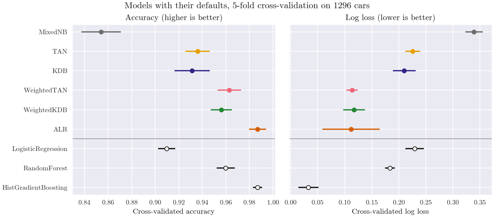
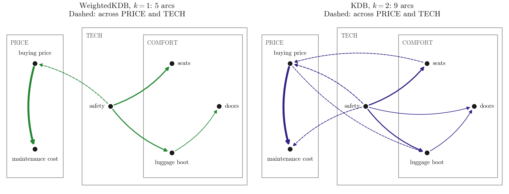
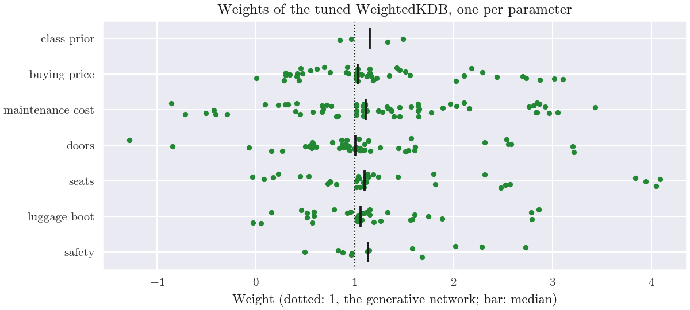
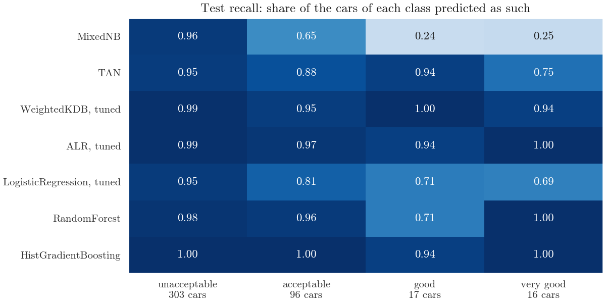

Note
Go to the end to download the full example code.
Tutorial: from a table of labels to a fitted network#
This tutorial follows one classification problem from the table to the
final evaluation, on the Car Evaluation data: 1728 cars described by six
categorical attributes, each rated unacceptable, acceptable,
good or very good. Tables of categories whose attributes act on
the class together, not one by one, are what Bayesian network classifiers
are built for. The tutorial shows how to:
fit a model on a pandas DataFrame of labels, without an encoder;
compare naive Bayes, the networks and their weighted versions with scikit-learn baselines by cross-validation, on accuracy and log loss;
tune the models with
GridSearchCV;read the fitted model: its arcs against the known structure of the problem, the weights it learned and the probabilities it gives;
evaluate the models once on a held-out test set, and predict a car with a label never seen in training.
The first fit of each model compiles its kernels, which takes some seconds
once; python -m skbn does it for every model after installing.
A table of continuous measurements: what to expect is the
counterpart on a table of continuous measurements, where these models are
not the best choice.
# Author: The scikit-bayes Developers
# SPDX-License-Identifier: BSD-3-Clause
The data#
The evaluations were not given car by car: they come from a hierarchical decision model that Bohanec and Rajkovic (1988) built with experts, which rates every combination of the attribute values. It combines the attributes in two concepts, the price and the technical characteristics, the second with a concept of its own, the comfort:
PRICE:
buying priceandmaintenance cost;TECH:
safetyand COMFORT (doors,seats,luggage boot).
The table holds every combination once, so the class is a deterministic
function of the attributes, which the classifiers must learn from
examples. Every cell is a label, such as "very high" or
"5 or more". The file comes with this example (UCI Machine Learning
Repository, licence CC BY 4.0); the script reads the copy on GitHub when
it is run on its own. A quarter of the cars is set aside for the final
evaluation.
from pathlib import Path
import matplotlib.pyplot as plt
import numpy as np
import pandas as pd
from sklearn.model_selection import train_test_split
# Next to this script, or on GitHub (``__file__`` is not defined in a notebook)
local = Path(globals().get("__file__", "")).parent / "car_evaluation.csv"
URL = (
"https://raw.githubusercontent.com/ptorrijos99/scikit-bayes/main/examples/tutorial/"
)
cars = pd.read_csv(local if local.exists() else URL + local.name)
X = cars.drop(columns="evaluation")
y = cars["evaluation"]
X_train, X_test, y_train, y_test = train_test_split(
X, y, test_size=0.25, stratify=y, random_state=0
)
print(y.value_counts().to_string())
X_train.head()
evaluation
unacceptable 1210
acceptable 384
good 69
very good 65
A first model#
MixedNB, naive Bayes for mixed data, takes the DataFrame
as it is: the text columns are typed as categorical (feature_types_,
by column index), and their labels are the categories. categories_
holds the labels of each column in the sorted order of their codes; the
order does not matter, since the models do not treat categories as
ordered.
from skbn import MixedNB
nb = MixedNB().fit(X_train, y_train)
print(nb.feature_types_)
print(dict(zip(X.columns, nb.categories_)))
pd.DataFrame(nb.predict_proba(X_test[:3]), columns=nb.classes_).round(3)
{'gaussian': [], 'categorical': [0, 1, 2, 3, 4, 5], 'bernoulli': []}
{'buying price': array(['high', 'low', 'medium', 'very high'], dtype=object), 'maintenance cost': array(['high', 'low', 'medium', 'very high'], dtype=object), 'doors': array(['2', '3', '4', '5 or more'], dtype=object), 'seats': array(['2', '4', 'more'], dtype=object), 'luggage boot': array(['large', 'medium', 'small'], dtype=object), 'safety': array(['high', 'low', 'medium'], dtype=object)}
Comparing the models#
The models go from independence to a network to weights.
MixedNB treats the attributes as independent given the
class. TAN and KDB add arcs between them: a
tree, and up to k attribute parents per attribute (k = 2 here; the
default k = 1 gives nearly the tree of TAN).
WeightedTAN and WeightedKDB keep these
networks and learn an exponent weight on each of their parameters, by
maximising the conditional likelihood of the class; ALR
does the same on an ensemble of a model per pair of attributes. Apart
from k, every model keeps its defaults.
The scikit-learn baselines need the labels encoded first: one-hot columns
for LogisticRegression, integer codes for
the two ensembles of trees. They also keep their defaults, except more
iterations for logistic regression.
from sklearn.ensemble import HistGradientBoostingClassifier, RandomForestClassifier
from sklearn.linear_model import LogisticRegression
from sklearn.model_selection import StratifiedKFold, cross_validate
from sklearn.pipeline import make_pipeline
from sklearn.preprocessing import OneHotEncoder, OrdinalEncoder
from skbn import ALR, KDB, TAN, WeightedKDB, WeightedTAN
logistic = make_pipeline(OneHotEncoder(), LogisticRegression(max_iter=1000))
models = {
"MixedNB": MixedNB(),
"TAN": TAN(),
"KDB": KDB(k=2),
"WeightedTAN": WeightedTAN(),
"WeightedKDB": WeightedKDB(k=2),
"ALR": ALR(),
"LogisticRegression": logistic,
"RandomForest": make_pipeline(
OrdinalEncoder(), RandomForestClassifier(random_state=0)
),
"HistGradientBoosting": make_pipeline(
OrdinalEncoder(), HistGradientBoostingClassifier(random_state=0)
),
}
# The colour of each model of the library in the gallery
palette = ["#6E6E6E", "#E69F00", "#332288", "#EE6677", "#228833", "#D55E00"]
colors = dict(zip(models, palette))
BASELINE = "#1A1A1A"
Each model is scored by 5-fold cross-validation on the training cars, on
accuracy and on log loss, which also judges the probabilities (lower is
better). Each model is fitted once beforehand, so that the fit times
measured by cross_validate() leave out the
compilation; they are approximate and depend on the machine.
cv = StratifiedKFold(n_splits=5, shuffle=True, random_state=0)
scores = {}
for name, model in models.items():
model.fit(X_train, y_train) # Compiles the kernels once
r = cross_validate(
model, X_train, y_train, cv=cv, scoring=["accuracy", "neg_log_loss"]
)
scores[name] = {
"accuracy": r["test_accuracy"],
"log loss": -r["test_neg_log_loss"],
"fit time (s)": r["fit_time"],
}
print(pd.DataFrame(scores).T.map(np.mean).round(3).to_string())
accuracy log loss fit time (s)
MixedNB 0.854 0.339 0.004
TAN 0.936 0.226 0.004
KDB 0.931 0.210 0.005
WeightedTAN 0.963 0.114 0.018
WeightedKDB 0.956 0.117 0.017
ALR 0.987 0.112 0.015
LogisticRegression 0.910 0.229 0.014
RandomForest 0.960 0.184 0.102
HistGradientBoosting 0.987 0.033 0.373
The figure gives the mean and the standard deviation over the five folds.
fig, axes = plt.subplots(1, 2, figsize=(10, 4.4), sharey=True)
names = list(models)[::-1] # The first model at the top
for ax, metric in zip(axes, ["accuracy", "log loss"]):
for i, name in enumerate(names):
color = colors.get(name, BASELINE)
fill = color if name in colors else "white" # Open: the baselines
values = scores[name][metric]
ax.errorbar(values.mean(), i, xerr=values.std(), fmt="o", c=color, mfc=fill)
ax.axhline(2.5, color="#999999", lw=1) # The library above, the baselines below
ax.set_xlabel(f"Cross-validated {metric}")
axes[0].set_yticks(range(len(names)), names)
axes[0].set_title("Accuracy (higher is better)")
axes[1].set_title("Log loss (lower is better)")
fig.suptitle("Models with their defaults, 5-fold cross-validation on 1296 cars")
plt.show()

Each step of the family buys a visible gain. Naive Bayes reaches an
accuracy of 0.854 and a log loss of 0.339; the arcs of TAN and KDB raise
the accuracy to about 0.93 and lower the log loss to about 0.22; the
weights on the same networks raise the accuracy to about 0.96 and halve
the log loss, to 0.11-0.12. ALR is as accurate as gradient boosting, at
0.987, but its log loss varies much over the folds: with its default
l2_reg=0, no penalty on its weights, it is far too confident on a few
cars.
The weighted models do better than logistic regression on both measures (0.910 and 0.229) and than the random forest on log loss (0.184), with about the same accuracy (0.956 and 0.963 against 0.960). Gradient boosting is still better than every model of the library, with an accuracy of 0.987 and a log loss of 0.033, and each of its fits takes about 0.7 s here, against about 0.01-0.05 s for the models of the library.
Tuning the models#
Three models are tuned by log loss on the same folds: the number of
parents k and the penalty l2_reg of WeightedKDB,
the penalty of ALR and the inverse penalty C of
logistic regression. The random forest and gradient boosting keep their
defaults.
from sklearn.model_selection import GridSearchCV
searches = {
"WeightedKDB": GridSearchCV(
WeightedKDB(), {"k": [1, 2, 3], "l2_reg": [0.01, 0.1, 1]}
),
"ALR": GridSearchCV(ALR(), {"l2_reg": [0, 0.1, 1, 10]}),
"LogisticRegression": GridSearchCV(
logistic, {"logisticregression__C": [1, 10, 100, 1000]}
),
}
for name, search in searches.items():
search.set_params(cv=cv, scoring="neg_log_loss").fit(X_train, y_train)
print(f"{name:18s} log loss {-search.best_score_:.3f} with {search.best_params_}")
# The log loss of WeightedKDB for every k (rows) and l2_reg (columns)
results = pd.DataFrame(searches["WeightedKDB"].cv_results_)
results["log loss"] = -results["mean_test_score"]
results.pivot(index="param_k", columns="param_l2_reg", values="log loss").round(3)
WeightedKDB log loss 0.076 with {'k': 1, 'l2_reg': 0.1}
ALR log loss 0.029 with {'l2_reg': 0.1}
LogisticRegression log loss 0.165 with {'logisticregression__C': 100}
The search lowers the log loss of WeightedKDB from 0.117 with k = 2
and the default penalty to 0.076 with k = 1 and l2_reg=0.1: with
1296 cars, a second and a third parent per attribute cost more than they
bring. ALR gains most, from 0.112 to 0.029 with l2_reg=0.1, below
the 0.033 of gradient boosting with its defaults, and logistic
regression goes from 0.229 to 0.164 with C=100. The best scores are
optimistic, since they were chosen on these same folds; the test set
below gives an unbiased comparison.
Reading the model#
best_estimator_ was refitted on all the training cars. edges_
lists the arcs of its network as (parent, child) column indices, and
to_dot() writes the whole network, class
included, for Graphviz.
model = searches["WeightedKDB"].best_estimator_
names = np.asarray(X.columns)
for parent, child in model.edges_:
print(f"{names[parent]} -> {names[child]}")
print(model.to_dot().splitlines()[:3])
safety -> buying price
buying price -> maintenance cost
luggage boot -> doors
safety -> seats
safety -> luggage boot
['digraph {', ' "class" -> "buying price";', ' "class" -> "maintenance cost";']
The arcs were chosen by the conditional mutual information
\(I(A_i; A_j \mid C)\) of every pair of attributes given the class,
in nats, conditional_mutual_info_:
pd.DataFrame(model.conditional_mutual_info_, index=names, columns=names).round(3)
The figure draws the arcs of the tuned model and those of
KDB with k = 2 over the concepts of the decision
model; every attribute also has the class as a parent, not drawn. The
width of an arc grows with the conditional mutual information of its two
attributes.
PRICE = ["buying price", "maintenance cost"] # The other attributes: TECH
position = { # Of each attribute, and alignment of its label
"buying price": (0, 1.6, "center", "bottom"),
"maintenance cost": (0, 0.4, "center", "top"),
"safety": (1.6, 1.0, "right", "center"),
"seats": (2.9, 1.6, "left", "center"),
"luggage boot": (2.9, 0.35, "center", "top"),
"doors": (3.9, 1.0, "left", "center"),
}
boxes = {"PRICE": (-0.6, 0, 1.2), "TECH": (1, -0.1, 3.5), "COMFORT": (2.3, 0, 2.1)}
fig, axes = plt.subplots(1, 2, figsize=(11, 4.2))
for ax, net in zip(axes, [model, models["KDB"]]):
label = type(net).__name__
for box, (x0, y0, width) in boxes.items(): # Boxes centred on y = 1
ax.add_patch(
plt.Rectangle((x0, y0), width, 2 - 2 * y0, fc="white", ec="#999999")
)
ax.text(x0 + 0.08, 1.92 - y0, box, va="top", fontsize=9, color="#575757")
cmi = net.conditional_mutual_info_
for p, c in net.edges_:
across = (names[p] in PRICE) != (names[c] in PRICE)
style = dict(arrowstyle="-|>", color=colors[label], lw=0.8 + 30 * cmi[p, c])
style.update(ls="--" if across else "-", connectionstyle="arc3,rad=0.15")
tail, head = position[names[p]][:2], position[names[c]][:2]
ax.annotate("", head, tail, arrowprops=dict(style, shrinkA=6, shrinkB=6))
for name, (x, y_, ha, va) in position.items():
dx = {"left": 0.12, "right": -0.12}.get(ha, 0)
dy = {"bottom": 0.1, "top": -0.1}.get(va, 0)
ax.scatter(x, y_, s=40, color=BASELINE, zorder=3)
ax.text(x + dx, y_ + dy, name, ha=ha, va=va, fontsize=9.5)
ax.set(xlim=(-0.7, 4.6), ylim=(-0.2, 2.2))
ax.axis("off")
title = f"{label}, $k = {net.k}$: {len(net.edges_)} arcs"
ax.set_title(title + "\nDashed: across PRICE and TECH")
plt.show()

With k = 1 each attribute has one attribute parent, and the five arcs
form a tree (the tree of TAN, up to the direction of one arc). The
strongest dependence, 0.075 nats, joins the two attributes of PRICE.
Three arcs stay within TECH, one of them between two attributes of
COMFORT (luggage boot and doors, 0.006). A tree must also join
PRICE to TECH, and does so with safety -> buying price (0.010). One
disagreement: the decision model combines seats and luggage boot
in COMFORT before it brings in safety, but the network hangs both from
safety (0.032 and 0.025), and the pairs within COMFORT have a
conditional mutual information of 0.006 at most. Low safety and two seats
each make a car unacceptable whatever the rest (the table of
probabilities below shows it), which ties these attributes to safety
given the class more than to each other.
With k = 2 the four second parents are weaker (0.004 to 0.007), and
three of them cross from PRICE to TECH or back, which the decision model
does not do; in the search above, the weighted network with k = 2
scored worse than with k = 1.
The tables#
conditional_table gives the probabilities that the network holds for
an attribute: a row for every class and value of its parent seen in
training, and a column for every value of the attribute. These are those
of the number of seats, whose parent is the safety:
model.conditional_table("seats", as_frame=True).round(2)
A car of low safety is unacceptable whatever the rest, so the other
classes have no row for it, and for an unacceptable car of low safety the
three numbers of seats are equally likely (0.34, 0.32, 0.34): the safety
has already settled the evaluation. Two seats are next to impossible for
an acceptable, a good or a very good car (0.01 to 0.04, which is the
smoothing alone, since no such car exists) and likely for an unacceptable
one of medium or high safety (0.55 and 0.68). The class very good has
a single row: all such cars have high safety.
The weights#
The tuned model has weight_level=4, the default: one weight per
parameter of the network, that is per value of an attribute, class and
value of its parent seen in training. prior_weights_ holds those of
the class prior and feature_weights_ those of each attribute; a
weight multiplies the logarithm of its probability, so 1 keeps the
generative network, a weight above 1 strengthens the evidence of that
probability and a weight below 1 weakens it.
fig, ax = plt.subplots(figsize=(8, 3.6))
rng = np.random.RandomState(0)
rows = {"class prior": model.prior_weights_, **dict(zip(names, model.feature_weights_))}
for i, w in enumerate(rows.values()):
w = w.ravel()
ax.scatter(w, i + rng.uniform(-0.2, 0.2, w.size), s=12, color=colors["WeightedKDB"])
ax.scatter(np.median(w), i, marker="|", s=300, color=BASELINE)
ax.axvline(1, color=BASELINE, ls=":", lw=1)
ax.set_yticks(range(len(rows)), list(rows))
ax.set_ylim(len(rows) - 0.5, -0.5)
ax.set_xlabel("Weight (dotted: 1, the generative network; bar: median)")
ax.set_title("Weights of the tuned WeightedKDB, one per parameter")
plt.show()

The medians stay close to 1, but the weights spread from -1.3 to 4.1:
they correct single cells of the tables in both directions, and a
negative weight reverses the evidence of its cell. weight_table says
which cell each weight belongs to, with the rows and the columns of the
table of probabilities above turned around: a row for every value of the
attribute and of its parent, and a column for every class.
model.weight_table("seats", as_frame=True).round(2)
For two seats and high safety the weights of acceptable, good and
very good are 2.48, 4.05 and 4.09: the probabilities of two seats in
those classes are only as small as the smoothing lets them be, and the
weights make them count more against classes that a car with two seats
never has. The weights of the cars of low safety stay between 0.7 and
1.1: the safety settles their evaluation and the seats add nothing. The
same network with
weight_level=1, one weight per factor, gives a coarser summary:
class prior 2.20
buying price 3.01
maintenance cost 2.00
doors 4.11
seats 2.77
luggage boot 2.88
safety 2.43
dtype: float64
Every weight is well above 1: the probabilities counted from the data are too flat for a rule that is deterministic, and the weights sharpen all of them. This differs from duplicated attributes, which get weights below 1 (Weighted TAN and KDB on duplicated attributes).
The probabilities#
The model gives a probability for any car, so tables can be read off it. The table below gives, for every safety and number of seats, the probability of each evaluation averaged over the 192 combinations of the other four attributes. The data hold each combination once, so the share of each evaluation among these 192 cars, as the decision model rates them, is known exactly; the printed line compares the two.
ORDER = ["unacceptable", "acceptable", "good", "very good"]
read_off = {}
for safety in ["low", "medium", "high"]:
for seats in ["2", "4", "more"]:
combinations = X.assign(safety=safety, seats=seats).drop_duplicates()
read_off[safety, seats] = model.predict_proba(combinations).mean(axis=0)
read_off = pd.DataFrame(read_off, index=model.classes_).T[ORDER]
exact = cars.groupby(["safety", "seats"])["evaluation"].value_counts(normalize=True)
exact = exact.unstack(fill_value=0).reindex(read_off.index)[ORDER]
gap = (read_off - exact).abs().to_numpy().max()
print(f"Largest difference from the decision model: {gap:.3f}")
read_off.round(3)
Largest difference from the decision model: 0.017
Low safety and two seats give unacceptable with a probability of at
least 0.996, as the decision model does with a share of 1, and every
probability is within 0.02 of the share, although the model saw only
1296 of the 1728 cars in training.
Final evaluation#
The test cars are used once, for the tuned models, the baselines and two models of the library with their defaults, all fitted on the whole training set.
from sklearn.metrics import accuracy_score, log_loss, recall_score
final = {
"MixedNB": nb,
"TAN": models["TAN"],
"WeightedKDB, tuned": model,
"ALR, tuned": searches["ALR"].best_estimator_,
"LogisticRegression, tuned": searches["LogisticRegression"].best_estimator_,
"RandomForest": models["RandomForest"],
"HistGradientBoosting": models["HistGradientBoosting"],
}
test, recall = {}, {}
for name, m in final.items():
pred, proba = m.predict(X_test), m.predict_proba(X_test)
test[name] = [accuracy_score(y_test, pred), log_loss(y_test, proba)]
test[name].append((pred != y_test).sum())
recall[name] = recall_score(y_test, pred, labels=ORDER, average=None)
test = pd.DataFrame(test, index=["accuracy", "log loss", "errors"]).T
print(test.astype({"errors": int}).round(3).to_string())
accuracy log loss errors
MixedNB 0.836 0.349 71
TAN 0.926 0.235 32
WeightedKDB, tuned 0.981 0.065 8
ALR, tuned 0.986 0.026 6
LogisticRegression, tuned 0.903 0.163 42
RandomForest 0.965 0.158 15
HistGradientBoosting 0.995 0.008 2
On the 432 test cars, the tuned WeightedKDB makes 8 errors and the tuned
ALR 6, with log losses of 0.065 and 0.026, against 42 errors for logistic
regression and 15 for the random forest, with log losses of 0.163 and
0.158. Gradient boosting is
better still, with 2 errors and a log loss of 0.008. The figure gives
the share of the cars of each class that each model finds: the frequent
unacceptable cars are found by every model, and the models differ on
the rare good and very good ones.
recall = pd.DataFrame(recall, index=ORDER).T
fig, ax = plt.subplots(figsize=(8, 4))
ax.imshow(recall, cmap="Blues", vmin=0, vmax=1, aspect="auto")
for (i, j), value in np.ndenumerate(recall.to_numpy()):
color = "white" if value > 0.6 else BASELINE
ax.text(j, i, f"{value:.2f}", ha="center", va="center", color=color)
counts = y_test.value_counts()[ORDER]
ax.set_xticks(range(4), [f"{label}\n{n} cars" for label, n in counts.items()])
ax.set_yticks(range(len(final)), list(final))
ax.grid(False)
ax.set_title("Test recall: share of the cars of each class predicted as such")
plt.show()

A label never seen in training#
The models accept a label that was never seen in training. The car below
is the first very good car of the test set, with its number of seats
replaced by each label, including "7". The table gives the
probability of very good for the tuned model and for KDB with
k = 2.
car = X_test[y_test == "very good"].iloc[[0]]
variants = pd.concat([car] * 4).assign(seats=["2", "4", "more", "7"])
compared = {"WeightedKDB, tuned": model, "KDB, k = 2": models["KDB"]}
very_good = {name: m.predict_proba(variants)[:, -1] for name, m in compared.items()}
pd.DataFrame(very_good, index=variants["seats"]).round(3)
An unseen label carries no information: the factor of seats is left
out. In the tuned model seats has no child, so this is all that
changes, and the probability, 0.924, lies between those of 4 seats and
of more. In KDB with k = 2, seats is also a parent of buying
price, whose conditional then falls back to the uninformed estimate of
a parent value never seen, and the probability of very good drops to
0.286: the prediction is not the one the model would give without the
column. The user guide describes these cases.
Total running time of the script: (0 minutes 16.545 seconds)